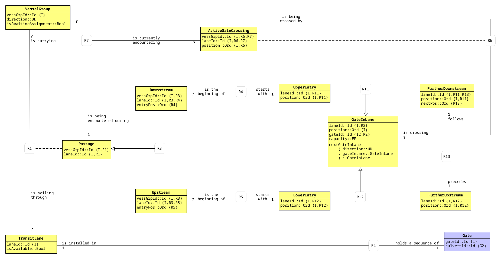
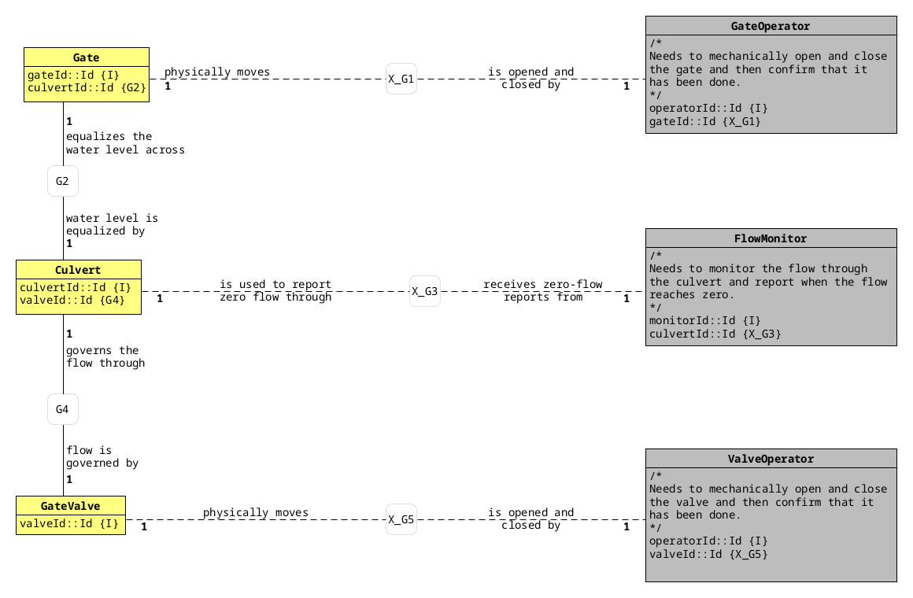
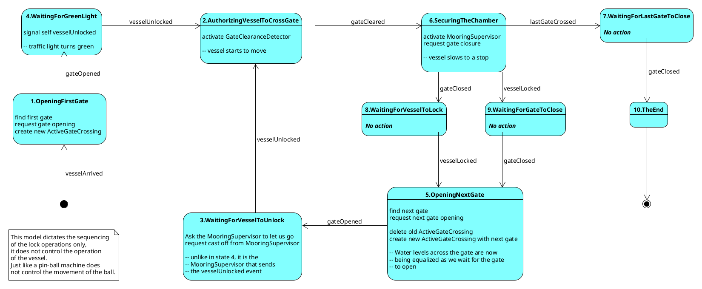
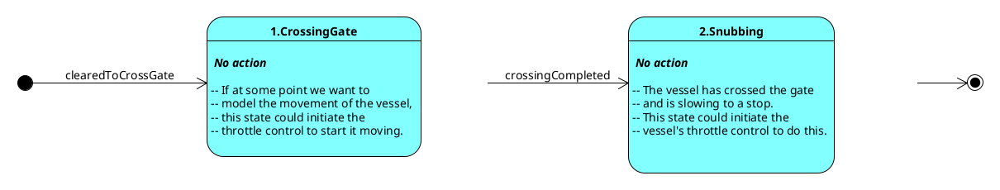
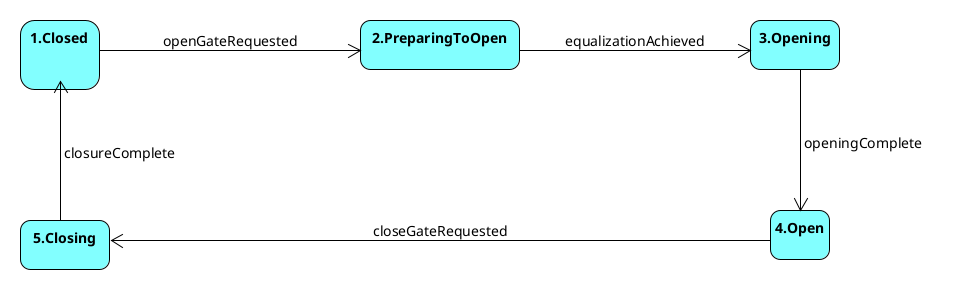
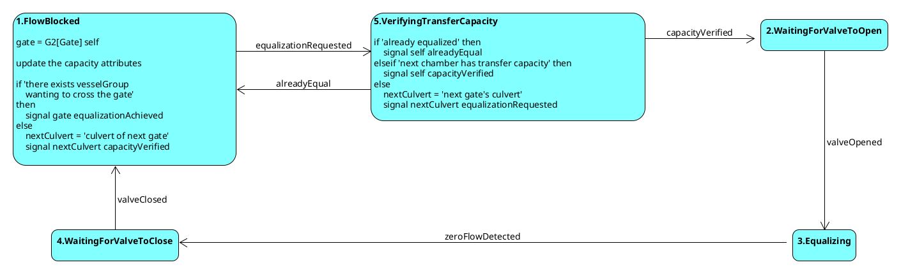
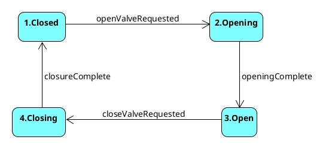
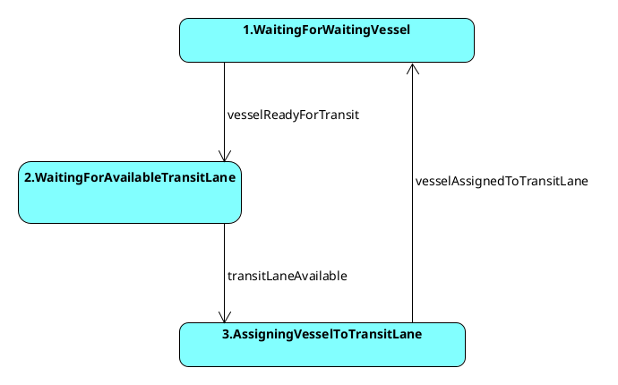

A Rosea Translation
22 Feb 2026
This document contains a Rosea translation of a Water Elevation Transit System (WETS). The WETS application domain was constructed by Paul Higham. The system also includes one other domain that serve as a simulated service domain to enable running the WETS domain in a freestanding system. All of the domains are packaged together and can be driven in a testing environment or in a freestanding running environment.
This document is a literate program containing the translation of a set of xUML domains using the Rosea translation tool. As a literate program, all code for the implementation is included directly in this document.
The purpose of the resulting translation is to provide a stand alone system that runs the WETS domain. The WETS domain model was created by Paul Higham and models locks in a canal. It was inspired by the Hiram H. Chittenden locks located in Seattle, Washington.
One other domain has been constructed to provide simulated client services to the WETS domain.
The following diagram is a domain chart for the three domains.
For convenience, the class diagrams for the WETS domain are included below. The domain consists of two subsystems, Transit and Gate Operation. The following diagram is the class model for the Transit subsystem.

The following diagram is the class model for the Gate Operation subsystem.

The WETS domain is translated to running code using the Rosea xUML translation tool. The resulting implementation is in the Tcl language.
Like all xUML domain, the WETS domain consists of classes, relationships, and a few other less frequently used constructs.
domain wets {
<<vessel-group-class>>
<<transit-lane-class>>
<<passage-class>>
<<upstream-class>>
<<downstream-class>>
<<gate-in-lane-class>>
<<active-gate-crossing>>
<<upper-entry-class>>
<<further-downstream-class>>
<<gate-class>>
<<culvert-class>>
<<gate-valve-class>>
<<associations>>
<<generalizations>>
assigner R1 {
<<R1-assigner>>
}
<<domain-operations>>
}The translation presented here starts by defining the data of the classes. In a separate section, any state model associated with the class is presented. We do not describe the classes here. The xUML model of the WETS domain is contained in a domain workbook and has all the information required.
It is worth noting that the Rosea domain specific language (DSL)
contains constructs that have a direct mapping from the various UML
diagrams used to capture the domain specification. For example,
attributes marked as identifiers with the {I} notation are
described by the -id option to the attribute
command. Of particular importance are referential attributes denoted
with {Rx} notation. These are specified to Rosea using the
reference command.
class VesselGroup {
attribute vessGrpId int -id 1 -system 1
attribute direction string\
-check {$direction eq "Upstream" || $direction eq "Downstream"}
attribute isAwaitingAssignment boolean -default true
}class TransitLane {
attribute laneId int -id 1 -system 1
attribute isAvailable boolean -default true
}class Passage {
attribute vessGrpId int -id 1
attribute laneId int -id 1
reference R1 VesselGroup -link vessGrpId
reference R1 TransitLane -link laneId
statemodel {
<<passage-state-model>>
}
}class Downstream {
attribute vessGrpId int -id 1
attribute laneId int -id 1
attribute entryPos int
reference R3 Passage -link vessGrpId -link laneId
reference R4 UpperEntry -link laneId -link {entryPos position}
}class Upstream {
attribute vessGrpId int -id 1
attribute laneId int -id 1
attribute entryPos int
reference R3 Passage -link vessGrpId
reference R3 Passage -link laneId
reference R5 LowerEntry -link laneId
reference R5 LowerEntry -link {entryPos position}
}class ActiveGateCrossing {
attribute vessGrpId int -id 1
attribute laneId int -id 1
attribute position int -id 1
reference R6 VesselGroup -link vessGrpId
reference R6 GateInLane -link laneId -link position
reference R7 Passage -link vessGrpId -link laneId
statemodel {
<<active-gate-crossing-state-model>>
}
}class UpperEntry {
attribute laneId int -id 1
attribute position int -id 1
reference R11 GateInLane -link laneId -link position
}class LowerEntry {
attribute laneId int -id 1
attribute position int -id 1
reference R12 GateInLane -link laneId -link position
}class GateInLane {
attribute laneId int -id 1
attribute position int -id 1
attribute gateId int -id 2 -system 1
attribute capacity string -default Empty -check {$capacity eq "Empty" || $capacity eq "Full"}
attribute inService boolean -default true
reference R2 TransitLane -link laneId
reference R2 Gate -link gateId
<<gate-in-lane-instance-ops>>
}instop nextGateInLane {direction} {
return [expr {($direction eq "Upstream") ?\
[findRelated $self {~R11 FurtherDownstream} R13 R12] :\
[findRelated $self {~R12 FurtherUpstream} ~R13 R11]}]
}class FurtherDownstream {
attribute laneId int -id 1
attribute position int -id 1
attribute nextPos int
reference R11 GateInLane -link laneId -link position
reference R13 FurtherUpstream -link laneId -link {nextPos position}
}class FurtherUpstream {
attribute laneId int -id 1
attribute position int -id 1
reference R12 GateInLane -link laneId -link position
}class Gate {
attribute gateId int -id 1
attribute culvertId int
reference G2 Culvert -link culvertId
statemodel {
<<gate-state-model>>
}
}class Culvert {
attribute culvertId int -id 1 -system 1
attribute valveId int
reference G4 GateValve -link valveId
statemodel {
<<culvert-state-model>>
}
}class GateValve {
attribute valveId int -id 1 -system 1
statemodel {
<<gate-valve-state-model>>
}
}association R1 VesselGroup ?--? TransitLane -associator Passage
association R2 Gate +--1 TransitLane -associator GateInLane
association R4 Downstream ?--1 UpperEntry
association R5 Upstream ?--1 LowerEntry
association R6 GateInLane ?--? VesselGroup -associator ActiveGateCrossing
association R7 ActiveGateCrossing ?--1 Passage
association R13 FurtherDownstream 1--1 FurtherUpstream
association G2 Gate 1--1 Culvert
association G4 Culvert 1--1 GateValvegeneralization R3 Passage\
Upstream\
Downstream
generalization R11 GateInLane\
UpperEntry\
FurtherDownstream
generalization R12 GateInLane\
LowerEntry\
FurtherUpstreamIn this section, the state models associated with those classes that have a life-cycle are given. Again the transcription from the state model graphic is direct. For convenience in performing the translation, the UML state model diagram is included. This is the same state model that can be found in the domain workbook for the WETS domain. Note also that xUML uses only simple Moore type state models and thus the complexity of full-blown hierarchical state models that UML allows is avoided.

initialstate OpeningFirstGate
defaulttrans CH
terminal TheEnd
transition @ - vesselArrived -> OpeningFirstGate
transition OpeningFirstGate - gateOpened -> WaitingForGreenLight
transition WaitingForGreenLight - vesselUnlocked -> AuthorizingVesselToCrossGate
transition AuthorizingVesselToCrossGate - gateCleared -> SecuringTheChamber
transition SecuringTheChamber - gateClosed -> WaitingForVesselToLock
transition SecuringTheChamber - vesselLocked -> WaitingForGateToClose
transition SecuringTheChamber - lastGateCrossed -> WaitingForLastGateToClose
transition WaitingForVesselToLock - vesselLocked -> OpeningNextGate
transition WaitingForGateToClose - gateClosed -> OpeningNextGate
transition OpeningNextGate - gateOpened -> WaitingForVesselToUnlock
transition WaitingForVesselToUnlock - vesselUnlocked -> AuthorizingVesselToCrossGate
transition WaitingForLastGateToClose - gateClosed -> TheEnd# 1. OpeningFirstGate
#
# vessel = R1[VesselGroup] self
# if vessel.direction == Upstream
# then entryGateInLane = ( R12[GateInLane]
# . R5
# . R3[Upstream]
# ) self
# else entryGateInLane = ( R11[GateInLane]
# . R4
# . R3[Downstream]
# ) self
# ActiveGateCrossing createasync clearedToCrossGate
# vesselGrpId = self.vesselGrpId
# laneId = self.laneId
# position = entryGateInLane.position
# entryGate = R2[Gate] entryGateInLane
# signal entryGate openGateRequestedstate OpeningFirstGate {} {
set vessel [findRelated $self {~R1 VesselGroup}]
if {[readAttribute $vessel direction] eq "Upstream"} {
set entryGateInLane [findRelated $self {~R3 Upstream} R5 R12]
} else {
set entryGateInLane [findRelated $self {~R3 Downstream} R4 R11]
}
ActiveGateCrossing createasync clearedToCrossGate {}\
vessGrpId [readAttribute $vessel vessGrpId]\
laneId [readAttribute $entryGateInLane laneId]\
position [readAttribute $entryGateInLane position]
set entryGate [findRelated $entryGateInLane ~R2]
signal $entryGate openGateRequested
}#4. WaitingForGreenLight
# signal self vesselUnlockedstate WaitingForGreenLight {} {
signal $self vesselUnlocked
}# 2. AuthorizingVesselToCrossGate
# vessel = R1[VesselGroup] self
# signal vessel clearedToCrossGate
#
# // We invoke the services of an external entity here to tell us
# // when a vessel has crossed out of the region in which
# // it may interfere with the closing of the gate.
#
# crossingGate =
# ( R6[GateInLane]
# . R7
# ) self
#
#
# O> { Target : startMonitoring(X_G7 crossingGate)
# , Expectation : that the targeted GateClearanceDetector will inform
# the Passage when the vesselGroup has moved out of
# the exclusion zone.
# , TransferVector
# { instance : self
# , eventName : gateCleared
# }
# }state AuthorizingVesselToCrossGate {} {
set crossingGate [findRelated $self ~R7 ~R6]
wormhole WETS01_monitor_gate_signal_gateCleared\
[identifier $crossingGate 2]\
[identifier $self]
}#6. SecuringTheChamber
#
# vessel = R1[VesselGroup] self
# currentGateInLane = R6[GateInLane] vessel
# currentGate = R2[Gate] currentGateInLane
#
# signal currentGate closeGateRequested
#
# nextGateInLane = nextGateInLane(vessel.direction, currentGateInLane)
#
# if empty nextGateInLane then
# // We must have crossed the last gate, so there is no need
# // to moor the vessel.
# signal self lastGateCrossed
# else
# // To find the chamber where mooring must take place,
# // our choices made the chamber be indexed by its
# // downstream gate. If the vessel is transiting upstream,
# // this gate is the one that the vessel has just crossed;
# // otherwise it is the next one downstream.
# if vessel.direction == Upstream
# then mooringChamber = currentGateInLane
# else mooringChamber = nextGateInLane
#
# // Activate the MooringSupervisor to report the mooring
# // of a vessel group.
# O> { Target : lockRequested(X_G9 mooringChamber)
# , Expectation : that the targeted MooringSupervisor will
# notify the Passage when the vessel has
# been locked to the chamber.
# , TransferVector
# { instance : self
# , eventName : vesselLocked
# }
# }
# endifstate SecuringTheChamber {} {
set vessel [findRelated $self {~R1 VesselGroup}]
set currentGateInLane [findRelated $vessel ~R6]
set currentGate [findRelated $currentGateInLane ~R2]
signal $currentGate closeGateRequested
set nextGateInLane [instop $currentGateInLane nextGateInLane [readAttribute $vessel direction]]
if {[isEmptyRef $nextGateInLane]} {
signal $self lastGateCrossed
} else {
set mooringChamber [expr {([readAttribute $vessel direction] eq "Upstream") ?\
$currentGateInLane : $nextGateInLane}]
wormhole WETS03_mooring_supervisor_lock_requested\
[identifier $mooringChamber 2]\
[identifier $self]
}
}#7. WaitingForLastGateToClosestate WaitingForLastGateToClose {} {} ; # empty#8. WaitingForVesselToLockstate WaitingForVesselToLock {} {} ; # empty#9. WaitingForGateToClosestate WaitingForGateToClose {} {} ; # empty# 5. OpeningNextGate
#
# vessel = R1[VesselGroup] self
# currentGateInLane = R6[GateInLane] vessel
# nextGateInLane = nextGateInLane(vessel.direction currentGateInLane)
# nextGate = R2[Gate] nextGateInLane
#
# // We wouldn't have ended up in this state if there was no next gate
# // to encounter, so we know it exists.
# signal nextGate openGateRequested
#
# // update the ActiveGateCrossing to the new gate by retiring
# // the old one and creating a new one
# signal (R7 self) crossingCompleted
#
# ActiveGateCrossing createasync clearedToCrossGate
# vesselGrpId = vessel.vesselGrpId
# laneId = nextGateInLane.laneId
# position = nextGateInLane.positionstate OpeningNextGate {} {
set vessel [findRelated $self {~R1 VesselGroup}]
set currentGateInLane [findRelated $vessel ~R6]
set nextGateInLane [instop $currentGateInLane nextGateInLane [readAttribute $vessel direction]]
set nextGate [findRelated $nextGateInLane ~R2]
signal $nextGate openGateRequested
set active_gate_crossing [findRelated $self ~R7]
signal $active_gate_crossing crossingCompleted
ActiveGateCrossing createasync clearedToCrossGate {}\
vessGrpId [readAttribute $vessel vessGrpId]\
laneId [readAttribute $nextGateInLane laneId]\
position [readAttribute $nextGateInLane position]
}# 3. WaitingForVesselToUnlock
# vessel = R1[VesselGroup] self
# currentGateInLane = R6[GateInLane] vessel
#
# if vessel.direction == Downstream
# then mooringChamber = currentGateInLane
# else mooringChamber = nextGateInLane(Downstream currentGateInLane)
#
# O> { Target : releaseRequested(X_G9 mooringChamber)
# , Expectation : that the targeted MooringSupervisor will
# notify the Passage when the vessel is cast off.
# , TransferVector
# { instance : self
# , eventName : vesselUnlocked
# }
# }state WaitingForVesselToUnlock {} {
set vessel [findRelated $self {~R1 VesselGroup}]
set currentGateInLane [findRelated $vessel ~R6]
set mooringChamber [expr {([readAttribute $vessel direction] eq "Downstream") ?\
$currentGateInLane :\
[instop $currentGateInLane nextGateInLane Downstream]}]
wormhole WETS10_mooring_supervisor_release_requested\
[identifier $mooringChamber 2]\
[identifier $self]
}#10. TheEnd
# transitLane = R1[TransitLane] self
# transitLane.isAvailable = True
# R1 signal transitLaneAvailable
#
# signal (R7 self) crossingCompleted
# delete ~R3[Upstream] self
# delete ~R3[Downstream] self
# delete R1[VesselGroup] selfstate TheEnd {} {
set transitLane [findRelated $self R1]
updateAttribute $transitLane isAvailable true
R1 signal transitLaneAvailable
signal [findRelated $self ~R7] crossingCompleted
delete [findRelated $self {~R3 Upstream}]
delete [findRelated $self {~R3 Downstream}]
delete [findRelated $self ~R1]
}
# TheEnd is a terminal state.
initialstate CrossingGate
defaulttrans CH
terminal Snubbing
transition @ - clearedToCrossGate -> CrossingGate
transition CrossingGate - crossingCompleted -> Snubbing
state CrossingGate {} {} ; # empty
state Snubbing {} {} ; # empty
initialstate Closed
defaulttrans CH
transition Closed - openGateRequested -> PreparingToOpen
transition PreparingToOpen - equalizationAchieved -> Opening
transition Opening - openingComplete -> Open
transition Open - closeGateRequested -> Closing
transition Closing - closureComplete -> Closed# 1. Closed
# passage = (R1[Passage] . R2) self
# signal passage gateClosedstate Closed {} {
set passage [findRelated $self R2 {~R1 Passage}]
signal $passage gateClosed
}# 2. PreparingToOpen
# culvert = G2 self
# signal culvert equalizationRequestedstate PreparingToOpen {} {
set culvert [findRelated $self G2]
signal $culvert equalizationRequested
}# 3. Opening
# X_signal (X_G1 self) startOpeningstate Opening {} {
wormhole WETS04_open_gate_signal_openingComplete [identifier $self]
}# 4. Open
# passage =
# ( R1[Passage]
# . R2[TransitLane]
# ) self
# signal passage gateOpenedstate Open {} {
set passage [findRelated $self R2 {~R1 Passage}]
signal $passage gateOpened
}# 5. Closing
# X_signal (X_G1 self) startClosingstate Closing {} {
wormhole WETS05_close_gate_signal_closureComplete [identifier $self]
}
initialstate FlowBlocked ; # not indicated on state diagram
defaulttrans CH
transition FlowBlocked - equalizationRequested -> VerifyingTransferCapacity
transition VerifyingTransferCapacity - capacityVerified -> WaitingForValveToOpen
transition VerifyingTransferCapacity - alreadyEqual -> FlowBlocked
transition WaitingForValveToOpen - valveOpened -> Equalizing
transition Equalizing - zeroFlowDetected -> WaitingForValveToClose
transition WaitingForValveToClose - valveClosed -> FlowBlocked# 1. FlowBlocked
# gate = G2[Gate] self
#
#
# // This action cannot be executed without the state machine first having
# // received the equalizationRequested event. The only way that can have
# // happened is if there is a vessel in the transit lane.
#
# currentGateInLane = R2[GateInLane] gate
# vesselWaitingAtGate = notEmpty(R6[VesselGroup] currentGateInLane)
#
# if vesselWaitingAtGate then
# // this is the gate that needs to know about the equalization,
# // since it must have been the source of the original request
#
# signal gate equalizationAchieved
# else
# // Find the culvert belonging to the next gate in the opposite
# // direction of that of the vessel's travel and inform it that
# // there is now enough capacity for it to be able to equalize.
# // We call this the returnCulvert.
#
# transitingVessel =
# ( R1[VesselGroup]
# . R2[TransitLane]
# ) gate
#
# if transitingVessel.direction === Upstream
# then returnDirection = Downstream
# else returnDirection = Upstream
#
# returnCulvert =
# ( G2[Culvert]
# . R2[Gate]
# ) nextGateInLane
# ( returnDirection
# , currentGateInLane
# )
#
# signal returnCulvert capacityVerified
# endifstate FlowBlocked {} {
set gate [findRelated $self ~G2]
set currentGateInLane [findRelated $gate {R2 GateInLane}]
set waitingVessel [findRelated $currentGateInLane R6]
if {[isNotEmptyRef $waitingVessel]} {
signal $gate equalizationAchieved
} else {
set transitingVessel [findRelated $gate R2 ~R1]
set returnDirection [expr {\
([readAttribute $transitingVessel direction] eq "Upstream") ?\
"Downstream" : "Upstream"}]
set nextGateInLane [instop $currentGateInLane nextGateInLane $returnDirection]
set returnCulvert [findRelated $nextGateInLane {~R2 Gate} G2]
signal $returnCulvert capacityVerified
}
}# 2. WaitingForValveToOpen
# X_signal (X_G4 self) openValveRequestedstate WaitingForValveToOpen {} {
set valve [findRelated $self G4]
signal $valve openValveRequested
}# 3. Equalizing
# X_signal (X_G3 self) startMonitoringstate Equalizing {} {
wormhole WETS06_monitor_flow_signal_zeroFlowDetected [identifier $self]
}# 4. WaitingForValveToClose
# currentGateInLane =
# ( R2[GateInLane]
# . G2[Gate]
# ) self
#
# downstreamGateInLane =
# nextGateInLane(Downstream, currentGateInLane)
#
# isUpperEntry = notEmpty (R11[UpperEntry] currentGateInLane)
# isLowerEntry = notEmpty (R12[LowerEntry] currentGateInLane)
#
# if isUpperEntry then
# // we can count on there being a downstreamGateInLane
# downstreamGateInLane.capacity = Full
# elseif isLowerEntry then
# currentGateInLane.capacity = Empty
# else // we're at an intermediate gate
# downstreamGateInLane.capacity = Full
# currentGateInLane.capacity = Empty
#
# signal (G4 self) closeValveRequestedstate WaitingForValveToClose {} {
set currentGateInLane [findRelated $self ~G2 {R2 GateInLane}]
set downstreamGateInLane [instop $currentGateInLane nextGateInLane Downstream]
set isUpperEntry [isNotEmptyRef [findRelated $currentGateInLane {~R11 UpperEntry}]]
set isLowerEntry [isNotEmptyRef [findRelated $currentGateInLane {~R12 LowerEntry}]]
if {$isUpperEntry} {
updateAttribute $downstreamGateInLane capacity Full
} elseif {$isLowerEntry} {
updateAttribute $currentGateInLane capacity Empty
} else {
updateAttribute $downstreamGateInLane capacity Full
updateAttribute $currentGateInLane capacity Empty
}
set valve [findRelated $self G4]
signal $valve closeValveRequested
}# 5. VerifyingTransferCapacity
# currentGateInLane =
# ( R2[GateInLane]
# . G2[Gate]
# ) self
#
# // if 'next chamber has transfer capacity'
# // where 'chamber' can also mean the upstream body of water, which is
# // always Full, or the downstream body of water which is always Empty
#
# downstreamGateInLane = nextGateInLane(Downstream, currentGateInLane)
# if notEmpty downstreamGateInLane
# then
# downstreamCapacity = downstreamGateInLane.capacity
# else
# downstreamCapacity = Empty
#
# upstreamCapacity = currentGateInLane.capacity
#
# // The following logic is to avoid having to open the gate and activate
# // the FlowMonitor, only to have it immediately report zero flow and
# // then summarily close the gate having changed nothing.
#
# isUpperEntry = notEmpty (R11[UpperEntry] currentGateInLane)
# isLowerEntry = notEmpty (R12[LowerEntry] currentGateInLane)
#
# fullBelow = downstreamCapacity == Full
# fullAbove = upstreamCapacity == Full
# emptyBelow = downstreamCapacity == Empty
# emptyAbove = upstreamCapacity == Empty
#
# equalized =
# isUpperEntry && fullBelow or
# isLowerEntry && emptyAbove or
# fullBelow && emptyAbove
#
# equalizable = emptyBelow && fullAbove
#
# lockedFull = fullBelow && fullAbove
# lockedEmpty = emptyBelow && emptyAbove
#
# if equalized then signal self alreadyEqual
# elseif equalizable then signal self capacityVerified
# elseif lockedFull then
#
# // There is no room to drain the upstream chamber, so by equalizing
# // the downstream culvert enough storage capacity will be created
# // to enable the equalization across the current culvert.
#
# downstreamCulvert =
# ( G2[Culvert]
# . R2[Gate]
# ) downstreamGateInLane
#
# signal downstreamCulvert equalizationRequested
#
# else // lockedEmpty
#
# // There is not enough water in the upstream chamber to fill
# // the downstream one, so by equalizing the upstream culvert
# // enough water is provided to enable the equalization across
# // the current culvert.
#
# upstreamCulvert =
# ( G2[Culvert]
# . R2[Gate]
# ) nextGateInLane
# ( Upstream
# , currentGateInLane
# )
#
# signal upstreamCulvert equalizationRequested
#
# endifstate VerifyingTransferCapacity {} {
set currentGateInLane [findRelated $self ~G2 {R2 GateInLane}]
set downstreamGateInLane [instop $currentGateInLane nextGateInLane Downstream]
set downstreamCapacity [expr {[isNotEmptyRef $downstreamGateInLane] ?\
[readAttribute $downstreamGateInLane capacity] : "Empty"}]
set upstreamCapacity [readAttribute $currentGateInLane capacity]
set isUpperEntry [isNotEmptyRef [findRelated $currentGateInLane {~R11 UpperEntry}]]
set isLowerEntry [isNotEmptyRef [findRelated $currentGateInLane {~R12 LowerEntry}]]
set fullBelow [string equal $downstreamCapacity Full]
set fullAbove [string equal $upstreamCapacity Full]
set emptyBelow [string equal $downstreamCapacity Empty]
set emptyAbove [string equal $upstreamCapacity Empty]
set equalized [expr {\
($isUpperEntry && $fullBelow) ||\
($isLowerEntry && $emptyAbove) ||\
($fullBelow && $emptyAbove)}]
set equalizable [expr {$emptyBelow && $fullAbove}]
set lockedFull [expr {$fullBelow && $fullAbove}]
set lockedEmpty [expr {$emptyBelow && $emptyAbove}]
if {$equalized} {
signal $self alreadyEqual
} elseif {$equalizable} {
signal $self capacityVerified
} elseif {$lockedFull} {
set downstreamCulvert [findRelated $downstreamGateInLane ~R2 G2]
signal $downstreamCulvert equalizationRequested
} elseif {$lockedEmpty} {
set nextGateInLane [instop $currentGateInLane nextGateInLane Upstream]
set upstreamCulvert [findRelated $nextGateInLane ~R2 G2]
signal $upstreamCulvert equalizationRequested
} else {
error "unexpected culvert state"
}
}
initialstate Closed
defaulttrans CH
transition Closed - openValveRequested -> Opening
transition Opening - openingComplete -> Open
transition Open - closeValveRequested -> Closing
transition Closing - closureComplete -> Closed# culvert = G4[Culvert] self
# signal culvert valveClosedstate Closed {} {
set culvert [findRelated $self ~G4]
signal $culvert valveClosed
}# X_signal (X_G5 self) startOpeningstate Opening {} {
wormhole WETS08_open_valve_signal_openingComplete [identifier $self]
}# culvert = G4[Culvert] self
# signal culvert valveOpenedstate Open {} {
set culvert [findRelated $self ~G4]
signal $culvert valveOpened
}# X_signal (X_G5 self) startClosingstate Closing {} {
wormhole WETS09_close_valve_signal_closureComplete [identifier $self]
}Assigners are state models placed on an association to manage
competitive relationships. In the WETS domain there is one assigner on
association R1 which manages the competition between
arriving Vessel Groups and available Transit
Lanes.

initialstate WaitingForWaitingVessel
defaulttrans CH
transition WaitingForWaitingVessel - vesselReadyForTransit -> WaitingForAvailableTransitLane
transition WaitingForWaitingVessel - transitLaneAvailable -> IG
transition WaitingForAvailableTransitLane - vesselReadyForTransit -> IG
transition WaitingForAvailableTransitLane - transitLaneAvailable -> AssigningVesselToTransitLane
transition AssigningVesselToTransitLane - vesselAssignedToTransitLane -> WaitingForWaitingVessel# select any vessel from VesselGroup
# where vessel.isAwaitingAssignment
#
# if notEmpty vessel then
# R1 signal vesselReadyForTransitstate WaitingForWaitingVessel {} {
set vessel [limitRef [VesselGroup findWhere {$isAwaitingAssignment}] 1]
if {[isNotEmptyRef $vessel]} {
R1 signal vesselReadyForTransit
}
}# select any transitLane from TransitLane
# where transitLane.isAvailable
#
# if nonEmpty transitLane then
# R1 signal transitLaneAvailablestate WaitingForAvailableTransitLane {} {
set transitLane [limitRef [TransitLane findWhere {$isAvailable}] 1]
if {[isNotEmptyRef $transitLane]} {
R1 signal transitLaneAvailable
}
}# select any vessel from VesselGroup
# where vessel.isAwaitingAssignment
#
# select any transitLane from TransitLane
# where transitLane.isAvailable
#
# Passage createasync vesselArrived
# vessGrpId vessel.vessGrpId
# laneId transitLane.laneId
#
# // The following completes the assignment by populating the appropriate
# // subclass of Passage according to the intended direction of the vessel.
# // This way the vessel is starting at the right end.
#
# gatesInLane = ~R2[GateInLane] transitLane
# if vessel.direction == upstream
# then
# lowerEntry = ~R12[LowerEntry] gatesInLane
# Upstream create
# vessGrpId vessel.vessGrpId
# laneId transitLane.laneId
# entryGate lowerEntry.position N.B. "entryGate" should be "entryPos"
# // this also creates an instance of the relationship R5
# else
# upperEntry = ~R11[UpperEntry] gatesInLane
# Downstream create
# vessGrpId vessel.vessGrpId
# laneId transitLane.laneId
# entryGate upperEntry.position N.B. "entryGate" should be "entryPos"
# // this also creates an instance of the relationship R4
#
# vessel.isAwaitingAssignment = False
# transitLane.isAvailable = False
#
# R1 signal vesselAssignedToTransitLanestate AssigningVesselToTransitLane {} {
set vessel [limitRef [VesselGroup findWhere {$isAwaitingAssignment}] 1]
set transitLane [limitRef [TransitLane findWhere {$isAvailable}] 1]
set vessGrpId [readAttribute $vessel vessGrpId]
set laneId [readAttribute $transitLane laneId]
Passage createasync vesselArrived {}\
vessGrpId $vessGrpId laneId $laneId
set gatesInLane [findRelated $transitLane {~R2 GateInLane}]
if {[readAttribute $vessel direction] eq "Upstream"} {
set lowerEntry [findRelated $gatesInLane {~R12 LowerEntry}]
Upstream create\
vessGrpId $vessGrpId\
laneId $laneId\
entryPos [readAttribute $lowerEntry position]
} else {
set upperEntry [findRelated $gatesInLane {~R11 UpperEntry}]
Downstream create\
vessGrpId $vessGrpId\
laneId $laneId\
entryPos [readAttribute $upperEntry position]
}
updateAttribute $vessel isAwaitingAssignment false
updateAttribute $transitLane isAvailable false
R1 signal vesselAssignedToTransitLane
}operation newVesselGroup {direction} {
# vessel = new VesselGroup where
# vessel.vessGrpId = newId(VesselGroup)
# vessel.direction = direction
# vessel.isAwaitingAssignment = True
# R1 signal vesselReadyForTransit
set vg_inst [VesselGroup create direction $direction]
R1 signal vesselReadyForTransit
return [readAttribute $vg_inst vessGrpId]
}Every domain is given an externalEventReceiver to
support signaling events that arrive from other domains into this
domain.
operation externalEventReceiver {class_name identifier event_name args} {
set inst [$class_name findById {*}$identifier]
if {[isEmptyRef $inst]} {
set msg "failed to find $class_name instance, $identifier"
log::error $msg
throw NO_SUCH_INSTANCE $msg
}
signal $inst $event_name {*}$args
}This section contains population for the WETS domain based on the Chittenden locks in Seattle Washington.
domain wets {
class TransitLane {laneId} {1 2}
# N.B. it is necessary to set the capacity of all GateInLane instances
# to "full" for those instances related to an UpperEntry. The UpperEntry
# is considered an infinite source of water and so is always full.
class GateInLane {
laneId position gateId capacity} {
1 1 1 -
1 2 2 Full
2 1 3 -
2 2 4 -
2 3 5 Full
}
class UpperEntry {
laneId position} {
1 2
2 3
}
class LowerEntry {
laneId position} {
1 1
2 1
}
class FurtherDownstream {
laneId position nextPos} {
1 1 2
2 1 2
2 2 3
}
class FurtherUpstream {
laneId position} {
1 2
2 2
2 3
}
class Gate {
gateId culvertId} {
1 1
2 2
3 3
4 4
5 5
}
class Culvert {
culvertId valveId} {
1 1
2 2
3 3
4 4
5 5
}
class GateValve {
valveId} {
1
2
3
4
5
}
}The Mechanical Management Domain is a service domain created solely to provide simulated services to the WETS domain to support running the WETS domain in a stand-alone manner. This domain handles the mechanical aspects of the WETS system such as gates, valves, and culvert flow sensors Since this domain is used for simulating services required by the WETS domain, it consists of isolated classes and there are no relationships. The classes serve as little more than receivers of the WETS domains requests. All of the classes operate by time, asserting the condition they represent after the given time has elapsed.
domain mechanical_mgmt {
operation randomizeTiming {{value true}} {
Motor randomizeTiming $value
Flow_Sensor randomizeTiming $value
Gate_Clearance_Detector randomizeTiming $value
Mooring_Supervisor randomizeTiming $value
}
<<mm-motor-class>>
<<mm-flow-sensor-class>>
<<mm-gate-clearance-class>>
<<mm-mooring-supervisor-class>>
# identifier is a list of attribute name/attribute value pairs
operation externalEventReceiver {class_name identifier event_name args} {
set inst [$class_name findById {*}$identifier]
if {[isEmptyRef $inst]} {
set msg "failed to find $class_name instance, $identifier"
log::error $msg
throw NO_SUCH_INSTANCE $msg
}
signal $inst $event_name {*}$args
}
}The semantic gap between the WETS domain concept of a Gate or GateValve is fulfilled by the Mechanical Management domain concept of a Motor. A Motor instance represents an electric motor used to open and close a gate in the lock or a valve in the culvert between two chambers. The Motor is presumed to turn in both directions and when the Motor is run out it opens what it is connected to. Conversely, when the Motor is run in it closes the gate or valve to which it is connected. The Motor is also equipped with sensor that signals when the Motor has reached its maximum extent, i.e. when the gate or valve is fully open or closed.
The Motor class supports two behaviors that can be used when it is integrated into a system with the WETS domain.
class Motor {
attribute name string -id 1
attribute transfer_vector list -default [list]
attribute run_time int -default 100 ; # milliseconds
attribute randomize_timing boolean -default false
attribute min_run_time int -default 2000
attribute max_run_time int -default 5000
classop randomizeTiming {{value true}} {
Motor update [pipe {
Motor findAll |
deRef ~ |
relation update ~ mtr_tup {true} {
tuple update $mtr_tup randomize_timing $value
}
}]
}
instop updateRunTime {} {
if {[readAttribute $self randomize_timing]} {
withAttribute $self run_time min_run_time max_run_time {
set run_time [randomInRange $min_run_time $max_run_time]
}
}
}
statemodel {
<<motor-state-model>>
}
}Each Culvert has an associated flow sensor that can determine when the flow of water between two chambers of the lock. When a valve is opened, water flows downhill from the uphill chamber until the water level in the two chambers is equal. The flow sensor is responsible for detecting that condition. In this simulation, there is no detection and the flow sensor simply reports that there is no water flow after some given amount of time.
class Flow_Sensor {
attribute name string -id 1
attribute transfer_vector list -default [list]
attribute delay_time int -default 100 ; # milliseconds
attribute randomize_timing boolean -default false
attribute min_delay_time int -default 2000
attribute max_delay_time int -default 5000
classop randomizeTiming {{value true}} {
Flow_Sensor update [pipe {
Flow_Sensor findAll |
deRef ~ |
relation update ~ fs_tup {true} {
tuple update $fs_tup randomize_timing $value
}
}]
}
instop updateDelayTime {} {
if {[readAttribute $self randomize_timing]} {
withAttribute $self delay_time min_delay_time max_delay_time {
set delay_time [randomInRange $min_delay_time $max_delay_time]
}
}
}
statemodel {
<<flow-sensor-state-model>>
}
}Because the gates separating chambers open into a chamber itself, there is a zone in the chamber that must be kept clear of any boats. It is the Gate Clearance Detector that has that responsibility.
class Gate_Clearance_Detector {
attribute name string -id 1
attribute transfer_vector list -default [list]
attribute delay_time int -default 100 ; # milliseconds
attribute randomize_timing boolean -default false
attribute min_delay_time int -default 2000
attribute max_delay_time int -default 5000
classop randomizeTiming {{value true}} {
Gate_Clearance_Detector update [pipe {
Gate_Clearance_Detector findAll |
deRef ~ |
relation update ~ fs_tup {true} {
tuple update $fs_tup randomize_timing $value
}
}]
}
instop updateDelayTime {} {
if {[readAttribute $self randomize_timing]} {
withAttribute $self delay_time min_delay_time max_delay_time {
set delay_time [randomInRange $min_delay_time $max_delay_time]
}
}
}
statemodel {
<<gate-clearance-state-model>>
}
}Because there is turbulence when water flows between chambers of the lock, boats are required to tie-off to the chamber walls and to each other before water is allowed to flow between chambers. The Mooring Supervisor detects when all the boats that have moved into a chamber are properly moored so that the water flow can be initiated.
class Mooring_Supervisor {
attribute name string -id 1
attribute transfer_vector list -default [list]
attribute delay_time int -default 100 ; # milliseconds
attribute randomize_timing boolean -default false
attribute min_delay_time int -default 2000
attribute max_delay_time int -default 5000
classop randomizeTiming {{value true}} {
Mooring_Supervisor update [pipe {
Mooring_Supervisor findAll |
deRef ~ |
relation update ~ fs_tup {true} {
tuple update $fs_tup randomize_timing $value
}
}]
}
instop updateDelayTime {} {
if {[readAttribute $self randomize_timing]} {
withAttribute $self delay_time min_delay_time max_delay_time {
set delay_time [randomInRange $min_delay_time $max_delay_time]
}
}
}
statemodel {
<<mooring-supervisor-state-model>>
}
}The following figure shows the state model of the Motor class.

initialstate In
state In {} {
wormhole MM01_transfer_to_wets [readAttribute $self transfer_vector]
}
transition In - run_in -> In
transition In - run_out -> Running_Out
state Running_Out {transfer_vector} {
updateAttribute $self transfer_vector $transfer_vector
instop $self updateRunTime
delaysignal [readAttribute $self run_time] $self extent_reached
}
transition Running_Out - extent_reached -> Out
transition Running_Out - run_out -> IG
state Out {} {
wormhole MM01_transfer_to_wets [readAttribute $self transfer_vector]
}
transition Out - run_out -> Out
transition Out - run_in -> Running_In
state Running_In {transfer_vector} {
updateAttribute $self transfer_vector $transfer_vector
instop $self updateRunTime
delaysignal [readAttribute $self run_time] $self extent_reached
}
transition Running_In - extent_reached -> In
transition Running_In - run_in -> IGThe following figure shows the state model of the Flow Sensor class.

initialstate Idle
state Idle {} {
wormhole MM01_transfer_to_wets [readAttribute $self transfer_vector]
}
transition Idle - monitor -> Sensing
transition Idle - flow_zero -> IG
state Sensing {transfer_vector} {
updateAttribute $self transfer_vector $transfer_vector
instop $self updateDelayTime
delaysignal [readAttribute $self delay_time] $self flow_zero
}
transition Sensing - flow_zero -> Idle
transition Sensing - monitor -> IGThe following figure shows the state model of the Gate Clearance Detector class.

initialstate Idle
defaulttrans CH
state Idle {} {
wormhole MM01_transfer_to_wets [readAttribute $self transfer_vector]
}
transition Idle - monitor -> Sensing
transition Idle - gate_cleared -> IG
state Sensing {transfer_vector} {
updateAttribute $self transfer_vector $transfer_vector
instop $self updateDelayTime
delaysignal [readAttribute $self delay_time] $self gate_cleared
}
transition Sensing - gate_cleared -> Idle
transition Sensing - monitor -> IGThe following figure shows the state model of the Mooring Supervisor class.

initialstate Idle
state Idle {} {
wormhole MM01_transfer_to_wets [readAttribute $self transfer_vector]
}
transition Idle - monitor -> Monitoring
transition Idle - flow_zero -> IG
state Monitoring {transfer_vector} {
updateAttribute $self transfer_vector $transfer_vector
instop $self updateDelayTime
delaysignal [readAttribute $self delay_time] $self all_moored
}
transition Monitoring - all_moored -> Idle
transition Monitoring - monitor -> IGThe initial instance population of the Mechanical Management domain corresponds to the initial instance population of the WETS domain. A canal lock system is built to a fixed configuration that does not change over time and so the small static populations serve to describe the entire mechanical system.
domain mechanical_mgmt {
class Motor {
name } {
Gate-M01
Gate-M02
Gate-M03
Gate-M04
Gate-M05
Valve-M01
Valve-M02
Valve-M03
Valve-M04
Valve-M05
}
class Flow_Sensor {
name } {
Sensor-F01
Sensor-F02
Sensor-F03
Sensor-F04
Sensor-F05
}
class Gate_Clearance_Detector {
name } {
GCD-01
GCD-02
GCD-03
GCD-04
GCD-05
}
class Mooring_Supervisor {
name } {
MS-01
MS-02
MS-03
}
}By design, all domains are unaware of the particulars of how their interactions are resolved. In this translation, we use the wormhole model of bridging. Broadly speaking this model of bridging involves:
Since the WETS domain is the application domain for this system, it originates most of the client requests.
namespace eval ::wets::wormhole {
namespace import ::ral::*
namespace import ::ralutil::*
<<logging-setup>>
<<wets-request-wormholes>>
namespace ensemble create
<<wets-mm-bridge-tables>>
}Most of the wormhole requests generated by the WETS domain are of the asynchronous type. As discussed previously, the semantic gap between a WETS Gate instance or a WETS GateValve instance are resolved by a Mechanical Management Motor class instance. That is, each WETS Gate instance has an associated Mechanical Management Motor instance and the same is true for WETS GateValve instances. All the wormholes defined by the WETS domain with Gates and GateValves are asynchronous. From the Motor perspective, this means that the response wormholes are directed to different classes in the WETS domain and it is not possible for the response wormhole to know into which class the response event is generated. The implication of this fan out of responses from the Motor class is that the transfer vector must carry the class to which the response event is directed.
This fact show up in two places.
<<WETS01-monitor-gate-signal-gateCleared>>
<<WETS02-stop-gate-monitor>>
<<WETS03-mooring-supervisor-lock-requested>>
<<WETS10-mooring-supervisor-release-requested>>
<<WETS04-open-gate-signal-opening-complete>>
<<WETS05-close-gate-signal-closure-complete>>
<<WETS06-monitor-flow-signal-zeroFlowDetected>>
<<WETS08-open-valve-signal-valveOpened>>
<<WETS09-close-valve-signal-valveClosed>>namespace export WETS01_monitor_gate_signal_gateCleared
proc WETS01_monitor_gate_signal_gateCleared {gate_identifier passage_identifier} {
set gate_mapping [relvar restrictone GateClearanceTable\
wets_identifier $gate_identifier]
if {[relation isempty $gate_mapping]} {
log::warn "WETS01_monitor_gate_signal_gateCleared:\
failed to find mapping for gate, $gate_identifier"
} else {
log::debug \n[relformat $gate_mapping\
"WETS01_monitor_gate_signal_gateCleared mapping for gate, $gate_identifier"]
relation assign $gate_mapping mech_identifier
set transfer_vector [list Passage $passage_identifier gateCleared]
::mechanical_mgmt externalEventReceiver Gate_Clearance_Detector $mech_identifier monitor $transfer_vector
}
}namespace export WETS02_stop_gate_monitor
proc WETS02_stop_gate_monitor {gate_identifier} {
}namespace export WETS03_mooring_supervisor_lock_requested
proc WETS03_mooring_supervisor_lock_requested {gate_identifier passage_identifier} {
set gate_mapping [relvar restrictone GateMooringTable\
wets_identifier $gate_identifier]
if {[relation isempty $gate_mapping]} {
log::warn "WETS03_mooring_supervisor_lock_requested:\
failed to find mapping for gate, $gate_identifier"
} else {
log::debug \n[relformat $gate_mapping\
"WETS03_mooring_supervisor_lock_requested mapping for gate, $gate_identifier"]
relation assign $gate_mapping mech_identifier
set transfer_vector [list Passage $passage_identifier vesselLocked]
::mechanical_mgmt externalEventReceiver Mooring_Supervisor $mech_identifier monitor $transfer_vector
}
}namespace export WETS10_mooring_supervisor_release_requested
proc WETS10_mooring_supervisor_release_requested {gate_identifier passage_identifier} {
set gate_mapping [relvar restrictone GateMooringTable\
wets_identifier $gate_identifier]
if {[relation isempty $gate_mapping]} {
log::warn "WETS10_mooring_supervisor_release_requested:\
failed to find mapping for gate, $gate_identifier"
} else {
log::debug \n[relformat $gate_mapping\
"WETS10_mooring_supervisor_release_requested mapping for gate, $gate_identifier"]
relation assign $gate_mapping mech_identifier
set transfer_vector [list Passage $passage_identifier vesselUnlocked]
::mechanical_mgmt externalEventReceiver Mooring_Supervisor $mech_identifier monitor $transfer_vector
}
}namespace export WETS04_open_gate_signal_openingComplete
proc WETS04_open_gate_signal_openingComplete {gate_identifier} {
set gate_mapping [relvar restrictone GateMotorTable\
wets_identifier $gate_identifier]
if {[relation isempty $gate_mapping]} {
log::warn "WETS04_open_gate_signal_openingComplete:\
failed to find mapping for gate, $gate_identifier"
} else {
log::debug \n[relformat $gate_mapping\
"WETS04_open_gate_signal_openingComplete mapping for gate, $gate_identifier"]
relation assign $gate_mapping mech_identifier
set transfer_vector [list Gate $gate_identifier openingComplete]
::mechanical_mgmt externalEventReceiver Motor $mech_identifier run_out $transfer_vector
}
}namespace export WETS05_close_gate_signal_closureComplete
proc WETS05_close_gate_signal_closureComplete {gate_identifier} {
set gate_mapping [relvar restrictone GateMotorTable\
wets_identifier $gate_identifier]
if {[relation isempty $gate_mapping]} {
log::warn "WETS05_close_gate_signal_closureComplete:\
failed to find mapping for gate, $gate_identifier"
} else {
log::debug \n[relformat $gate_mapping\
"WETS05_close_gate_signal_closureComplete mapping for, $gate_identifier"]
relation assign $gate_mapping mech_identifier
set transfer_vector [list Gate $gate_identifier closureComplete]
::mechanical_mgmt externalEventReceiver Motor $mech_identifier run_in $transfer_vector
}
}namespace export WETS06_monitor_flow_signal_zeroFlowDetected
proc WETS06_monitor_flow_signal_zeroFlowDetected {culvert_identifier} {
set culvert_mapping [relvar restrictone CulvertSensorTable\
wets_identifier $culvert_identifier]
if {[relation isempty $culvert_mapping]} {
log::warn "WETS06_monitor_flow_signal_zeroFlowDetected:\
failed to find mapping for culvert, $culvert_identifier"
} else {
log::debug \n[relformat $culvert_mapping\
"WETS06_monitor_flow_signal_zeroFlowDetected mapping for, $culvert_identifier"]
relation assign $culvert_mapping mech_identifier
set transfer_vector [list Culvert $culvert_identifier zeroFlowDetected]
::mechanical_mgmt externalEventReceiver Flow_Sensor $mech_identifier monitor $transfer_vector
}
}namespace export WETS08_open_valve_signal_openingComplete
proc WETS08_open_valve_signal_openingComplete {valve_identifier} {
set valve_mapping [relvar restrictone ValveMotorTable\
wets_identifier $valve_identifier]
if {[relation isempty $valve_mapping]} {
log::warn "WETS08_open_valve_signal_valveOpened:\
failed to find mapping for gate, $valve_identifier"
} else {
log::debug \n[relformat $valve_mapping\
"WETS08_open_valve_signal_valveOpened mapping for valve, $valve_identifier"]
relation assign $valve_mapping mech_identifier
set transfer_vector [list GateValve $valve_identifier openingComplete]
::mechanical_mgmt externalEventReceiver Motor $mech_identifier run_out $transfer_vector
}
}namespace export WETS09_close_valve_signal_closureComplete
proc WETS09_close_valve_signal_closureComplete {valve_identifier} {
set valve_mapping [relvar restrictone ValveMotorTable\
wets_identifier $valve_identifier]
if {[relation isempty $valve_mapping]} {
log::warn "WETS09_close_valve_signal_valveClosed:\
failed to find mapping for gate, $valve_identifier"
} else {
log::debug \n[relformat $valve_mapping\
"WETS09_close_valve_signal_valveClosed mapping for valve, $valve_identifier"]
relation assign $valve_mapping mech_identifier
set transfer_vector [list GateValve $valve_identifier closureComplete]
::mechanical_mgmt externalEventReceiver Motor $mech_identifier run_in $transfer_vector
}
}The WETS bridge tables close the semantic gap between the WETS domain and the Mechanical Management domain. In this simplified simulation, we use a separate table for each class-to-class mapping of the wormhole requests.
<<gate-motor-bridge-table>>
<<valve-motor-bridge-table>>
<<culvert-sensor-bridge-table>>
<<gate-clearance-bridge-table>>
<<gate-mooring-bridge-table>>relvar create GateMotorTable {
wets_identifier list
mech_identifier list
} {wets_identifier}
relvar insert GateMotorTable {
wets_identifier {gateId 1} mech_identifier {name Gate-M01}
} {
wets_identifier {gateId 2} mech_identifier {name Gate-M02}
} {
wets_identifier {gateId 3} mech_identifier {name Gate-M03}
} {
wets_identifier {gateId 4} mech_identifier {name Gate-M04}
} {
wets_identifier {gateId 5} mech_identifier {name Gate-M05}
}relvar create ValveMotorTable {
wets_identifier list
mech_identifier list
} {wets_identifier}
relvar insert ValveMotorTable {
wets_identifier {valveId 1} mech_identifier {name Valve-M01}
} {
wets_identifier {valveId 2} mech_identifier {name Valve-M02}
} {
wets_identifier {valveId 3} mech_identifier {name Valve-M03}
} {
wets_identifier {valveId 4} mech_identifier {name Valve-M04}
} {
wets_identifier {valveId 5} mech_identifier {name Valve-M05}
}relvar create CulvertSensorTable {
wets_identifier list
mech_identifier list
} {wets_identifier}
relvar insert CulvertSensorTable {
wets_identifier {culvertId 1} mech_identifier {name Sensor-F01}
} {
wets_identifier {culvertId 2} mech_identifier {name Sensor-F02}
} {
wets_identifier {culvertId 3} mech_identifier {name Sensor-F03}
} {
wets_identifier {culvertId 4} mech_identifier {name Sensor-F04}
} {
wets_identifier {culvertId 5} mech_identifier {name Sensor-F05}
}relvar create GateClearanceTable {
wets_identifier list
mech_identifier list
} {wets_identifier}
relvar insert GateClearanceTable {
wets_identifier {gateId 1} mech_identifier {name GCD-01}
} {
wets_identifier {gateId 2} mech_identifier {name GCD-02}
} {
wets_identifier {gateId 3} mech_identifier {name GCD-03}
} {
wets_identifier {gateId 4} mech_identifier {name GCD-04}
} {
wets_identifier {gateId 5} mech_identifier {name GCD-05}
}relvar create GateMooringTable {
wets_identifier list
mech_identifier list
} {wets_identifier}
relvar insert GateMooringTable {
wets_identifier {gateId 1} mech_identifier {name MS-01}
} {
wets_identifier {gateId 2} mech_identifier {name MS-01}
} {
wets_identifier {gateId 3} mech_identifier {name MS-02}
} {
wets_identifier {gateId 4} mech_identifier {name MS-03}
} {
wets_identifier {gateId 5} mech_identifier {name MS-03}
}The Mechanical Management domain operates only in the role of a service and thus has only response wormholes.
namespace eval ::mechanical_mgmt::wormhole {
namespace import ::ral::*
namespace import ::ralutil::*
<<logging-setup>>
<<mm-response-wormholes>>
namespace ensemble create
}As discussed previously, there is only one response wormhole for the Mechanical Management domain.
<<MM01-transfer-to-wets>>namespace export MM01_transfer_to_wets
proc MM01_transfer_to_wets {transfer_vector} {
lassign $transfer_vector xfer_class xfer_identifier xfer_event
::wets externalEventReceiver $xfer_class $xfer_identifier $xfer_event
}set logger [::logger::initNamespace [namespace current]]
set appenderType [expr {[dict exist [fconfigure stdout] -mode] ?\
"colorConsole" : "console"}]
::logger::utils::applyAppender -appender $appenderType -serviceCmd $logger\
-appenderArgs {-conversionPattern {\[%c\] \[%p\] '%m'}}
log::setlevel $::options(level)<<license>>
rosea configure {
<<wets-domain>>
<<mechanical-mgmt-domain>>
}
rosea generate
rosea populate {
<<wets-population>>
<<mechanical-mgmt-population>>
}
namespace eval ::wets {
<<logging-setup>>
}
namespace eval ::mechanical_mgmt {
<<logging-setup>>
}
<<wets-bridge-wormholes>>
<<mm-bridge-wormholes>>#!/usr/bin/env tclsh
<<license>>
package require Tcl 8.6 9
package require rosea
package require ral
package require ralutil
package require cmdline
package require logger
package require logger::utils
package require logger::appender
package require textutil::wcswidth
set optlist {
{level.arg notice {Log debug level}}
{trace {Trace state machine transitions}}
{rash {Use rash package as a dashboard}}
{timeout.arg {20000} {Synchronization timeout in ms}}
}
try {
array set options [::cmdline::getoptions argv $optlist]
} on error {result} {
chan puts -nonewline stderr $result
exit 1
}
source ./wets.tcl
if {$::options(trace)} {
rosea trace control loglevel info
rosea trace control logon
}
if {$::options(rash)} {
package require rash
wm withdraw .
rash init
tkwait window .rash
}# This software is copyrighted 2025-2026 by G. Andrew Mangogna.
# The following terms apply to all files associated with the software unless
# explicitly disclaimed in individual files.
#
# The authors hereby grant permission to use, copy, modify, distribute,
# and license this software and its documentation for any purpose, provided
# that existing copyright notices are retained in all copies and that this
# notice is included verbatim in any distributions. No written agreement,
# license, or royalty fee is required for any of the authorized uses.
# Modifications to this software may be copyrighted by their authors and
# need not follow the licensing terms described here, provided that the
# new terms are clearly indicated on the first page of each file where
# they apply.
#
# IN NO EVENT SHALL THE AUTHORS OR DISTRIBUTORS BE LIABLE TO ANY PARTY FOR
# DIRECT, INDIRECT, SPECIAL, INCIDENTAL, OR CONSEQUENTIAL DAMAGES ARISING
# OUT OF THE USE OF THIS SOFTWARE, ITS DOCUMENTATION, OR ANY DERIVATIVES
# THEREOF, EVEN IF THE AUTHORS HAVE BEEN ADVISED OF THE POSSIBILITY OF
# SUCH DAMAGE.
#
# THE AUTHORS AND DISTRIBUTORS SPECIFICALLY DISCLAIM ANY WARRANTIES,
# INCLUDING, BUT NOT LIMITED TO, THE IMPLIED WARRANTIES OF MERCHANTABILITY,
# FITNESS FOR A PARTICULAR PURPOSE, AND NON-INFRINGEMENT. THIS SOFTWARE
# IS PROVIDED ON AN "AS IS" BASIS, AND THE AUTHORS AND DISTRIBUTORS HAVE
# NO OBLIGATION TO PROVIDE MAINTENANCE, SUPPORT, UPDATES, ENHANCEMENTS,
# OR MODIFICATIONS.
#
# GOVERNMENT USE: If you are acquiring this software on behalf of the
# U.S. government, the Government shall have only "Restricted Rights"
# in the software and related documentation as defined in the Federal
# Acquisition Regulations (FARs) in Clause 52.227.19 (c) (2). If you
# are acquiring the software on behalf of the Department of Defense,
# the software shall be classified as "Commercial Computer Software"
# and the Government shall have only "Restricted Rights" as defined in
# Clause 252.227-7013 (c) (1) of DFARs. Notwithstanding the foregoing,
# the authors grant the U.S. Government and others acting in its behalf
# permission to use and distribute the software in accordance with the
# terms specified in this license.